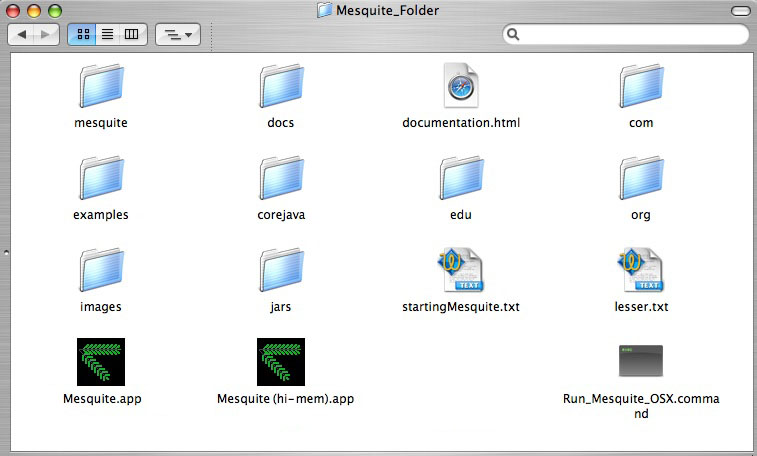

Mesquite installation for MacOS X
(Please email us ( )
with questions or comments about downloading Mesquite).
)
with questions or comments about downloading Mesquite).
Instructions:
- Download mesquite.dmg.
- If the mesquite.dmg doesn't mount into a disk image automatically, double
click it to mount. You will see a Mesquite_Folder. Drag this Mesquite_Folder
to your hard drive (e.g., your Applications folder). Its contents should look
like this:

- Double click one of the Mesquite icons to start Mesquite. We suggest you
try first Mesquite OSX. This starts the most current version of Java on your
computer. The other versions start Java 1.4 or allocate more memory. You might
want to try these if you are having problems with the normal version. We recommend
the most current versions of OS X and Java.
- You will also notice the file "Run_Mesquite_OSX.command". This
contains the command needed to start Mesquite as if from the command line.
You can edit this command (using a text editor) to fine-tune the amount of
memory allocated to Mesquite, and perhaps to modify startup conditions.
- To change the memory allocation of the "Mesquite OSX
(hi-mem)" control-click (right click) on the application, and from the
drop down menu choose Show Package Contents. Inside, go to Contents/info.plist.
Open this file with a text editor, and in the line " <string>-Xmx512m
-Djava.library.path=lib</string>" change the number 512 either
higher or lower (do not introduce spaces!).
Requirements: OS X 10.4 or higher recommended; Java 1.4 or later.
NOTE: If you have a previous version of Mesquite installed in your system,
we advise that you delete it before installing the new version. Remember to
save
More details of issues of using Mesquite under Mac OS X are described in the
Support
page.
Copyright © 2002-2007 W. & D. Maddison